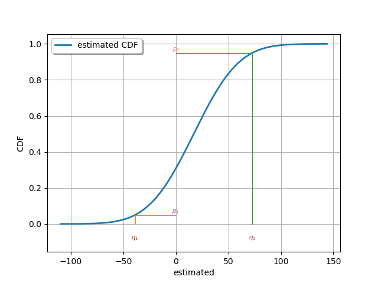
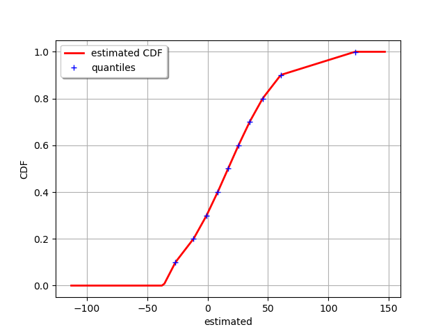

Note
Click here to download the full example code
Define a distribution from quantiles¶
In this example we are going to estimate a parametric distribution by numerical optimization of some quantiles.
import openturns as ot
from openturns.viewer import View
We need as many quantile values as there are parameters
of the distribution.
For example, for a normal distribution, the two parameters are the mean and the
standard deviation.
This implies that two quantiles are required to estimate the parameters
of a normal distribution.
The values of the parameters  ,
,  will be used as the reference to assess the optimization.
will be used as the reference to assess the optimization.
dist_ref = ot.Normal(17.0, 34.0)
dist_ref.setDescription(["reference"])
p1 = 0.05
p2 = 0.95
q1 = dist_ref.computeQuantile(p1)[0]
q2 = dist_ref.computeQuantile(p2)[0]
print(q1, q2)
-38.92502331635007 72.92502331635006
Fit a normal distribution from these quantiles by numerical optimization. Ensure we get the same values as the reference.
factory = ot.QuantileMatchingFactory(ot.Normal(), [p1, p2])
dist_estim = factory.buildFromQuantiles([q1, q2])
dist_estim.setDescription(["estimated"])
print(dist_estim)
Normal(mu = 17, sigma = 34)
Graphically validate if the estimated distribution verifies the imposed quantiles.
graph = dist_estim.drawCDF()
curve_q1 = ot.Curve([q1, q1, 0.0], [0.0, p1, p1])
curve_q2 = ot.Curve([q2, q2, 0.0], [0.0, p2, p2])
graph.add(curve_q1)
graph.add(curve_q2)
text_q1 = ot.Text([[q1, -0.1]], [r"$q_1$"])
text_p1 = ot.Text([[0.0, p1]], [r"$p_1$"])
graph.add(text_q1)
graph.add(text_p1)
text_q2 = ot.Text([[q2, -0.1]], [r"$q_2$"])
text_p2 = ot.Text([[0.0, p2]], [r"$p_2$"])
graph.add(text_q2)
graph.add(text_p2)
_ = View(graph)

It is also possible to define a Histogram distribution from quantiles. As it is a non-parametric distribution we can define as many quantiles as needed.
N = 10
probabilities = [(i + 1) / N for i in range(N)]
probabilities[-1] = 1.0 - 1e-3
quantiles = [dist_ref.computeQuantile(pi)[0] for pi in probabilities]
The service is part of the HistogramFactory class.
We also need to define the lower bound of the Histogram to build the distribution.
lowerBound = quantiles[0] - 10.0
histo_quant = ot.HistogramFactory().buildFromQuantiles(
lowerBound, probabilities, quantiles
)
Graphically validate if the estimated distribution verifies the imposed quantiles. We can see that the CDF of the estimated Histogram matches all the quantile dots.
histo_quant.setDescription(["estimated"])
graph = histo_quant.drawCDF()
curve_qi = ot.Cloud(quantiles, probabilities)
curve_qi.setLegend("quantiles")
graph.add(curve_qi)
_ = View(graph)
View.ShowAll()

Total running time of the script: ( 0 minutes 0.128 seconds)